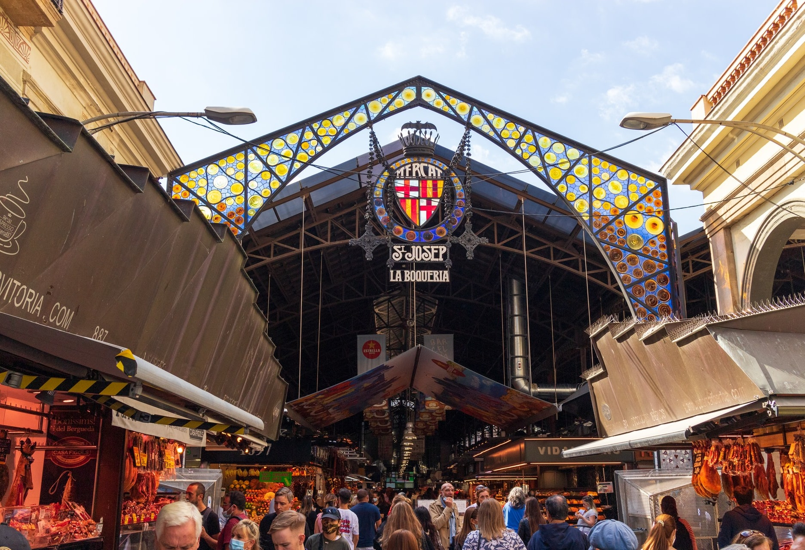
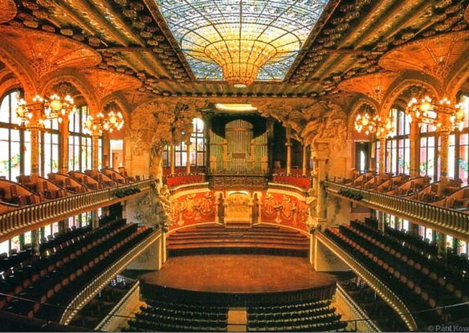
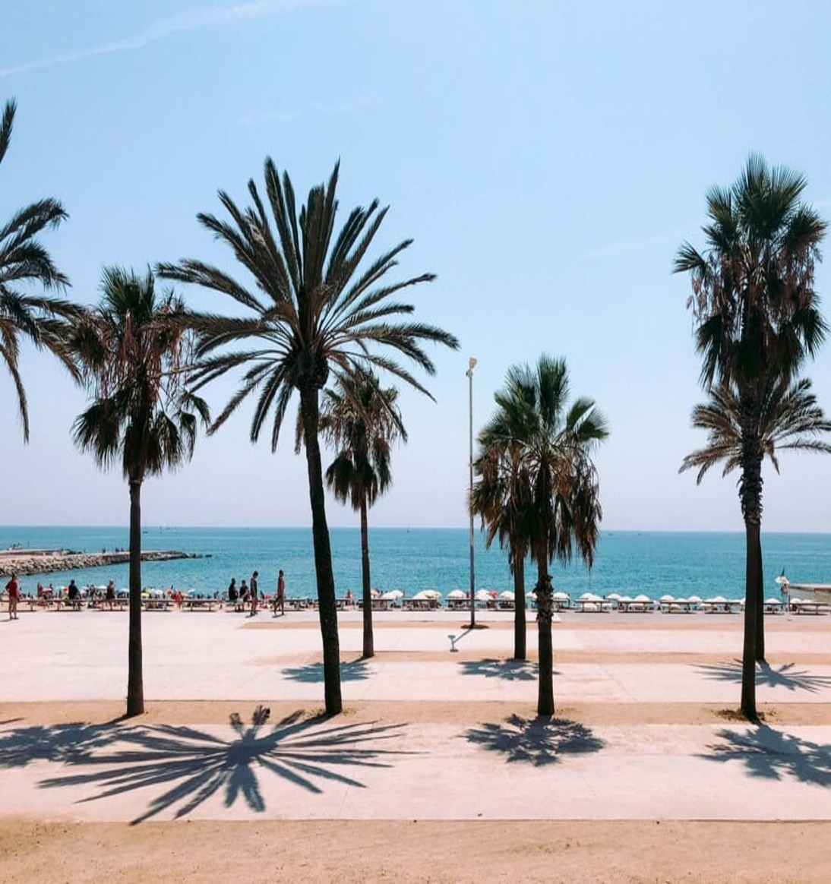
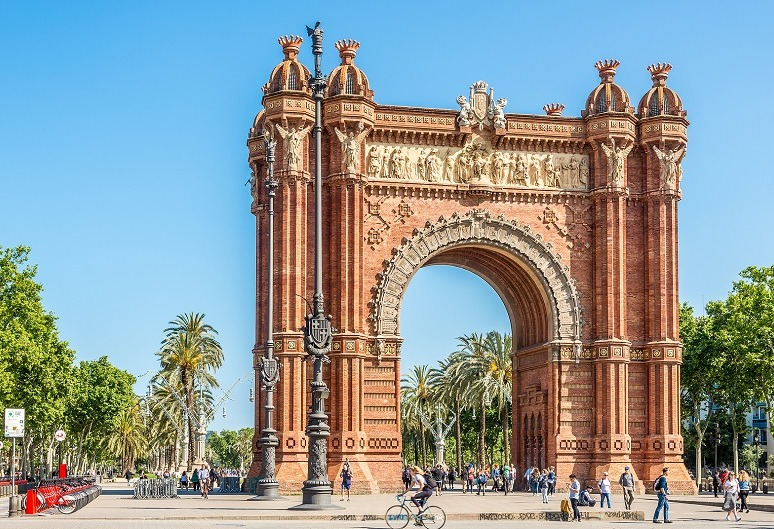
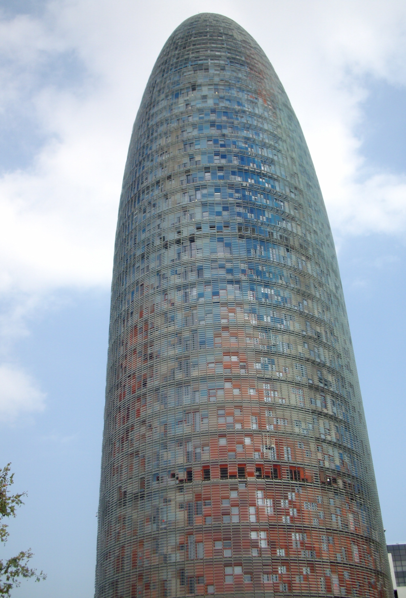

Barcelone en 4 jours, sans courir
Un format court, pensé pour profiter de la ville sans transformer l'escapade en course contre la montre. Le programme donne un fil conducteur riche et structuré, avec des dîners au restaurant ou des soirées tapas organisés chaque soir pour savourer la gastronomie catalane.
Le voyage en un coup d'œil

🏛️ Barri Gòtic
- Cœur médiéval de Barcelone
- Ruelles, placettes, traces de l'ancienne ville
- Atmosphère très barcelonaise
- Cathédrale et places secrètes

🍅 La Boqueria & tapas
- Couleurs et produits catalans
- Pause gourmande sur les Ramblas
- Tapas et spécialités locales
- Un marché iconique

🎭 Palau de la Música
- Chef-d'œuvre du modernisme catalan
- Lumière, mosaïques, sculpture
- Spectaculaire salle de concert
- Classé UNESCO

🏖️ Barceloneta & la mer
- Flânerie au bord de la mer
- Façades populaires
- Ambiance méditerranéenne
- Soirée tapas les pieds dans le sable

🏛️ Arc de Triomf & Ciutadella
- Promenade vers l'Arc de Triomf
- Parc de la Ciutadella
- Parenthèse verte en pleine ville
- Architecture et nature

🌆 Barcelone contemporaine
- Passeig de Gràcia & modernisme
- Torre Glòries (ex-Tour Agbar)
- Santa Maria del Mar
- Diagonal et quartier des affaires
Le modernisme catalan
Entre Gaudí, Domènech i Montaner et Puig i Cadafalch, Barcelone est un musée à ciel ouvert. Le Palau de la Música en est le joyau absolu.
Votre itinéraire jour par jour
Jour 1 · Le voyage fait partie de l'escapade
Lérida · Barcelone
Départ. Pause déjeuner à Lérida. Une étape volontaire pour couper le trajet et donner au voyage un premier parfum catalan. Arrivée à Barcelone, installation à l'hôtel puis première promenade dans le quartier et dîner de tapas à proximité pour prendre ses repères en douceur.
Commencer doucement
Sans programme lourd dès l'arrivée. Une journée de liaison, mais pas une journée perdue, avec une première immersion gustative le soir.
Jour 2 · Barcelone historique et gourmande
Le Barri Gòtic
Une promenade dans le cœur médiéval : ruelles, placettes, traces de l'ancienne ville et atmosphère très barcelonaise. La Cathédrale et ses environs.
La Boqueria
Puis les Ramblas et le marché : couleurs, produits catalans et pause gourmande. Un moment iconique de Barcelone.
Du modernisme à la Méditerranée
Visite du Palau de la Música Catalana : lumière, mosaïques, sculpture et spectaculaire salle de concert. Puis cap vers la Barceloneta : flânerie au bord de la mer, façades populaires et ambiance méditerranéenne.
Soirée tapas à la Barceloneta
Dîner de tapas dans le quartier de la Barceloneta pour savourer les produits de la mer et l'ambiance vivante des bodegas catalanes.
Jour 3 · Modernisme & Barcelone contemporaine
Passeig de Gràcia
Façades modernistes, grandes avenues et lecture de l'architecture de Gaudí et de ses contemporains.
Arc de Triomf & Ciutadella
Une parenthèse plus verte : promenade vers l'Arc de Triomf puis le parc de la Ciutadella.
Torre Glòries & Barcelone d'aujourd'hui
L'ancienne Tour Agbar est devenue un repère du paysage contemporain. Visite de Santa Maria del Mar pour compléter la journée. La Diagonal et le quartier des affaires.
Dîner au restaurant
Soirée dans un restaurant traditionnel catalan pour découvrir les saveurs du terroir : paella, fideuà ou spécialités de la mer.
Jour 4 · Le retour en douceur
Départ de Barcelone
Une matinée volontairement légère pour quitter Barcelone sans précipitation, puis reprendre la route.
Déjeuner à Narbonne
La pause retour devient une dernière petite parenthèse de voyage : déjeuner puis, selon l'horaire, quelques pas le long du canal de la Robine ou dans le centre historique. Narbonne est traversée par le canal de la Robine, embranchement du canal du Midi classé au patrimoine mondial de l'UNESCO.
Retour
Route du retour avec les images de Barcelone en tête.
Narbonne & le canal de la Robine
Embranchement du canal du Midi classé UNESCO. Une dernière petite parenthèse de voyage avant le retour.
L'esprit du voyage
🎨 Culture
Palau · Gòtic · Santa Maria del Mar · Modernisme
🍽️ Saveurs
Boqueria · tapas · marchés · produits catalans · restaurants choisis
🌊 Méditerranée
Barceloneta · promenades · plages · terrasses
✨ La philosophie VPDVOYAGES
- Sélection : Des étapes qui ont du sens dans le rythme global
- Équilibre : Culture + gastronomie + quartiers + soirées organisées
- Personnalisation : Le programme évolue selon vos envies
Votre itinéraire sur la carte
Bon séjour à Barcelone !
Escapade en 4 jours · Barcelone · « Regards croisés »
Parlons de votre projet →